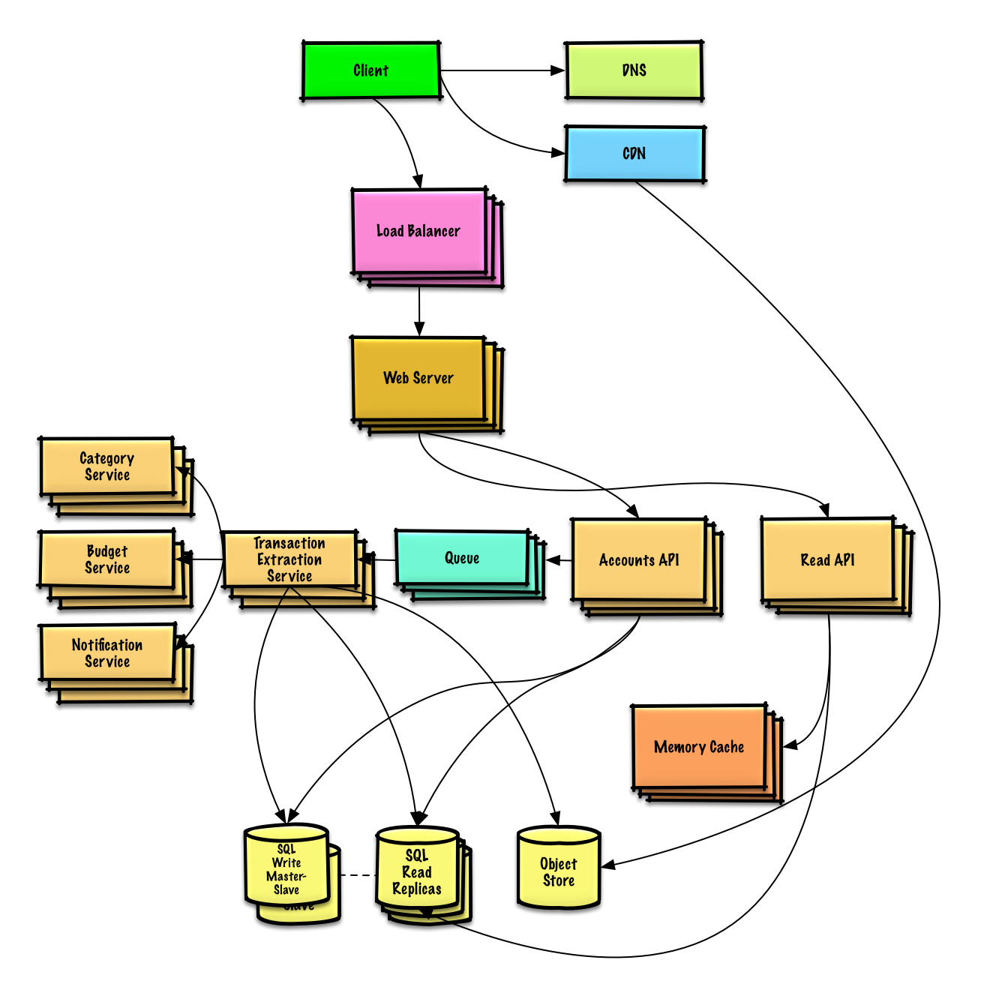
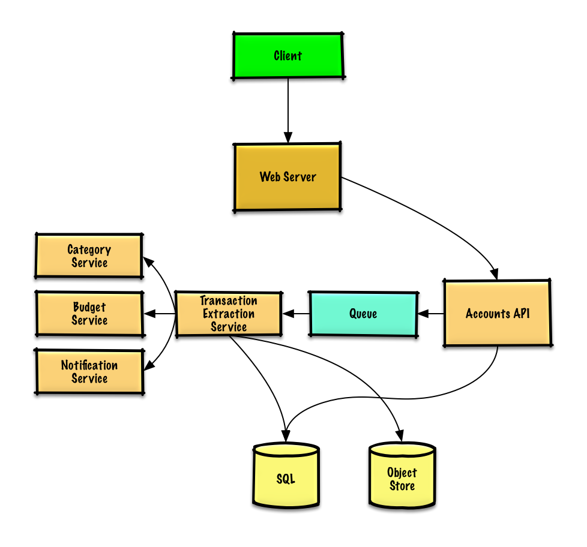

MODULE 14 · SYSTEM DESIGN SOLUTION
Solution to the exercise: "Design Mint.com"
A service that links to a user's financial accounts, pulls transactions out automatically, categorizes them, and warns the user when they're close to blowing a budget.
Out of scope: extra logging/analytics.

User records live comfortably in a relational database (10 million rows is nothing special — the interesting tradeoffs are all downstream, in how transactions get extracted and categorized at volume).
Client → Web Server (reverse proxy) → Accounts API, which writes a row into the accounts table:
id int NOT NULL AUTO_INCREMENT created_at datetime NOT NULL last_update datetime NOT NULL account_url varchar(255) NOT NULL account_login varchar(32) NOT NULL account_password_hash char(64) NOT NULL user_id int NOT NULL PRIMARY KEY(id) FOREIGN KEY(user_id) REFERENCES users(id)
Index id, user_id, and created_at to keep lookups fast and in memory (memory reads run ~250μs vs. 4x on SSD, 80x on disk — the same reason this matters everywhere else in the course).
$ curl -X POST --data '{ "user_id": "foo", "account_url": "bar",
"account_login": "baz", "account_password": "qux" }' \
https://mint.com/api/v1/account
Triggers: first link, manual refresh, or an automatic daily pull for anyone active in the last 30 days. Pulling from a bank can be slow, so the Accounts API just drops a job on a Queue (SQS/RabbitMQ-class) and returns — this is Module 09's asynchronism pattern in action. A Transaction Extraction Service then: pulls the job, fetches raw transactions from the institution into the Object Store, runs them through the Category Service, runs them through the Budget Service (which fires a notification if the user is near/over budget), writes categorized rows to transactions and rolled-up rows to monthly_spending, and notifies the user the sync finished (again via a queue).
transactions monthly_spending id, created_at, seller, id, month_year, category, amount, user_id amount, user_id PRIMARY KEY(id) PRIMARY KEY(id) FOREIGN KEY(user_id) FOREIGN KEY(user_id)
Seed a seller→category dictionary for the most common sellers — 50,000 sellers at well under 255 bytes each is only ~12 MB, trivial to keep fully in memory. For anything not seeded, fall back to crowdsourced data from users' own manual overrides, using a heap to find the most common override per seller in O(1).
# -*- coding: utf-8 -*-
from enum import Enum
class DefaultCategories(Enum):
HOUSING = 0
FOOD = 1
GAS = 2
SHOPPING = 3
# ...
seller_category_map = {}
seller_category_map['Exxon'] = DefaultCategories.GAS
seller_category_map['Target'] = DefaultCategories.SHOPPING
class Categorizer(object):
def __init__(self, seller_category_map, seller_category_overrides_map):
self.seller_category_map = seller_category_map
self.seller_category_overrides_map = seller_category_overrides_map
def categorize(self, transaction):
if transaction.seller in self.seller_category_map:
return self.seller_category_map[transaction.seller]
if transaction.seller in self.seller_category_overrides_map:
seller_category_map[transaction.seller] = \
self.manual_overrides[transaction.seller].peek_min()
return self.seller_category_map[transaction.seller]
return None
class Transaction(object):
def __init__(self, timestamp, seller, amount):
self.timestamp = timestamp
self.seller = seller
self.amount = amount
class Budget(object):
def __init__(self, template_categories_to_budget_map):
self.categories_to_budget_map = template_categories_to_budget_map
def override_category_budget(self, category, amount):
self.categories_to_budget_map[category] = amountStart from an income-tiered template instead of storing all 100 million budget items — only store what a user actually overrides, in a budget_overrides table.
class Budget(object):
def __init__(self, income):
self.income = income
self.categories_to_budget_map = self.create_budget_template()
def create_budget_template(self):
return {
DefaultCategories.HOUSING: self.income * .4,
DefaultCategories.FOOD: self.income * .2,
DefaultCategories.GAS: self.income * .1,
DefaultCategories.SHOPPING: self.income * .2,
# ...
}
def override_category_budget(self, category, amount):
self.categories_to_budget_map[category] = amountThe Budget Service can compute monthly_spending with plain SQL aggregation (there are far fewer monthly rows than the 5 billion raw transactions), or — likely better at this volume — run MapReduce directly over the raw transaction log files, which also categorizes on the fly and keeps the heavy lifting off the primary database:
# -*- coding: utf-8 -*-
from mrjob.job import MRJob
class SpendingByCategory(MRJob):
def __init__(self, categorizer):
self.categorizer = categorizer
...
def current_year_month(self):
"""Return the current year and month."""
...
def extract_year_month(self, timestamp):
"""Return the year and month portions of the timestamp."""
...
def handle_budget_notifications(self, key, total):
"""Call notification API if nearing or exceeded budget."""
...
def mapper(self, _, line):
"""Parse each log line, extract and transform relevant lines.
Emit key value pairs of the form:
(2016-01, shopping), 25
(2016-01, shopping), 100
(2016-01, gas), 50
"""
timestamp, category, amount = line.split('\t')
period = self. extract_year_month(timestamp)
if period == self.current_year_month():
yield (period, category), amount
def reducer(self, key, values):
"""Sum values for each key.
(2016-01, shopping), 125
(2016-01, gas), 50
"""
total = sum(values)
self.handle_budget_notifications(key, total)
yield key, sum(values)
def steps(self):
"""Run the map and reduce steps."""
return [
self.mr(mapper=self.mapper,
reducer=self.reducer)
]
if __name__ == '__main__':
SpendingByCategory.run()
A new read-heavy use case shows up at scale: viewing summaries and recent transactions. Serve it cache-aside (Module 08) — check the Memory Cache first, fall back to SQL on a miss, then populate the cache; static content comes from an Object Store behind a CDN.
Move the monthly_spending rollups into a dedicated Analytics Database (Redshift/BigQuery-class) rather than the primary SQL database, and consider keeping only a recent window of raw transactions in SQL with the rest in a data warehouse or Object Store — comfortably within reach of S3-class storage at 250 GB/month. 200 average reads/sec is cache-and-read-replica territory; 2,000 average writes/sec is genuinely tough for one SQL write master, which is where Module 07's Federation, Sharding, Denormalization and SQL tuning (plus a possible move to NoSQL for part of the data) come back in.
Next in Module 14: Social graph. Previous: Web crawler.